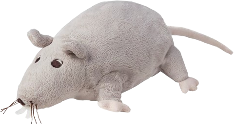

wd <html>
    <head>
        <meta charset="UTF-8">
        <link rel="stylesheet" href="Pliki/styl.css">
    </head>
    <body>
        
        <script>
            function orientacja() {
                if (window.innerHeight > window.innerWidth) {
                    window.location.replace("warning.html");
                }
            }
            orientacja();
            window.addEventListener("resize", orientacja);
        </script>
    </body>
</html>
